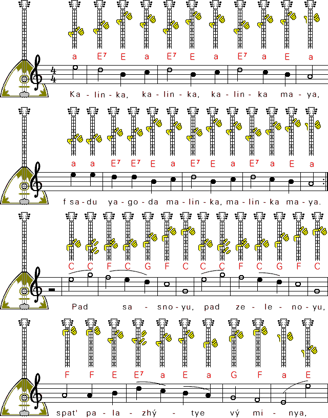

Аккорды следующие:

Данные аккорды подходят для балалайки, настроенной на балалаечном строе. Это значит, что две толстые (верхние) струны настраиваются на ноту Ми, а нижняя (тонкая) на ноту Ля. Получится так называемый высокий строй. Можно настроить две струны на Ре, а тонкую на Соль, тогда получится низкий строй. Но аккорды останутся теми же самыми.